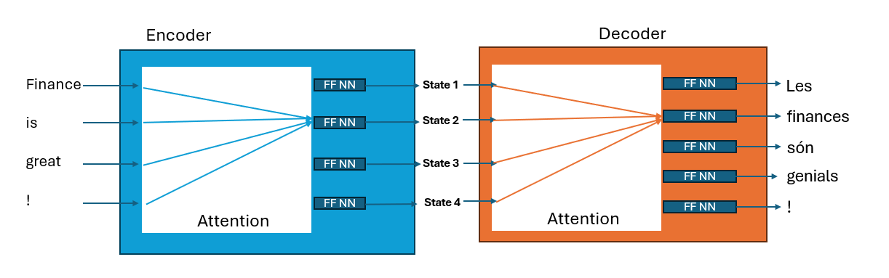

Day 1: Introduction to Large Language Models
2025-05-07
Introduction to Large Language Models in Finance
Overview of Today’s Lecture
- Evolution of NLP applications in Finance
- Word Embeddings
- Tokenizers
- The Transformers Architecture
- Classification and Scalability of LLMs
Evolution of NLP Applications in Finance
Historical Development
- Traditional rule-based approaches (1960s – 1990s) – keyword spotting and hand-written grammars for parsing bank statements and wire stories.
- Statistical methods (1990s – 2010s) – TF-IDF, n-grams, naïve Bayes sentiment (e.g. Antweiler & Frank 2004)
- Machine-learning era (2010s) – supervised classifiers & finance-specific dictionaries (e.g. Loughran & McDonald 2011)
- Deep-learning revolution (≈2015 +) – word-embeddings, CNN/RNN sentiment on earnings calls, transformer topic models (e.g. Manela & Moreira 2017)
- Large Language Models (2018 +) – GPT-style chatbots & summarizers now embedded in research and advisory workflows (see Morgan Stanley GPT-4 Assistant 2023).
Academic Milestones (2004 – 2024)
- Antweiler & Frank 2004, JF – Internet-forum sentiment & volatility (link)
- Tetlock 2007, JF – WSJ pessimism predicts next-day returns (link)
- Dougal et al. 2012, RFS – Columnist-specific tone moves the market (link)
- Loughran & McDonald 2011, JF – Finance-specific tone dictionaries for 10-Ks (link)
- Jegadeesh & Wu 2013, JFE – Market-reaction-weighted tone metric (link)
- Chen et al. 2014, RFS – Seeking Alpha opinions predict returns & EPS surprises (link)
- Manela & Moreira 2017, JFE – NVIX text-based disaster-risk index (link)
- Buehlmaier & Whited 2018, RFS – Text-identified financial-constraints premium (link)
- Hassan et al. 2019, QJE – Firm-level political-risk from earnings-call text (link)
- Bybee et al. 2024, JF – Topic-model news-attention indices improve macro forecasts (link)
Why it matters
- Predict returns, volatility, and risk premia
- Reveal intangible firm traits (constraints, political risk)
- Enhance macro forecasting with text-derived factors
- Methodology shifted: word-counts → ML classification → embeddings & topic models
Real-World Industry Applications of NLP
- Thomson Reuters / Bloomberg News Analytics – Real-time machine-readable sentiment feeds power quant desks and HFT strategies (Forbes)
- RavenPack – >70 % of top quant funds ingest its news-sentiment data for alpha & risk (RavenPack)
- MarketPsych Capital (2008-10) – Hedge fund trading on media sentiment, +28 % during the 2008 crisis (MarketPsych)
- Derwent Capital “Twitter Fund” 2011 – $40 m portfolio guided by Twitter mood (Atlantic)
- J.P. Morgan COIN 2017 – NLP reviews loan contracts in seconds, saving 360 k lawyer-hours (ABA Journal)
- Morgan Stanley GPT-4 Assistant 2023-24 – Chatbot for 16 k advisors, instant Q&A on 100 k research docs (Press release)
- Kensho (acq. S&P Global 2018) – NLP Q&A platform “Warren” enhances S&P analytics (S&P Global)
- SEC “RoboCop” 2013 – Accounting Quality Model flags anomalous filings for enforcement (Harvard Law Blog)
- Lloyd’s / FRISS Fraud Detection – Text-mining claims boosts fraud-catch rate ≈30 % (Lloyd’s Lab report)
Key take-aways
- Alpha & Risk – sentiment + event extraction
- Efficiency – contract analysis, research Q&A
- Governance – regulators spot fraud & anomalies
- Generative AI – LLM-powered advisory tools
Word Embeddings in Finance
What Are Word Embeddings?
Technical Definition
- Word embeddings: Dense vector representations of words in a continuous vector space
- Words are mapped to real-valued vectors in an n-dimensional space (typically 100-300 dimensions)
- Semantically similar words are positioned closer together in this vector space
- The relative positions and distances between word vectors encode meaningful relationships
Intuition
- Think of embeddings as “translating” words into a language that computers understand (numbers)
- Each dimension represents a latent feature of the word’s meaning
- Instead of treating words as isolated symbols, embeddings capture their context and relationships
- Example: In a 2D simplification, “profit” and “earnings” would be close together, while “loss” would be farther away
Why Embeddings Matter in Finance
- Transform unstructured textual data (news, reports, filings) into structured numerical data
- Enable quantitative analysis of qualitative information
- Allow algorithms to understand semantic relationships between financial concepts
- Support tasks like sentiment analysis, document classification, and information retrieval
- Bridge the gap between natural language and mathematical models
Traditional Word Embedding Methods
Count-Based Methods
Bag of Words (BoW)
- Represents text as occurrence counts of words
- Simple but loses word order and context
- Financial application: Basic frequency analysis of terms in earnings reports
TF-IDF (Term Frequency-Inverse Document Frequency)
- Weights word importance by frequency in document and rarity across corpus
- Helps identify distinctive terms in financial documents
- Financial application: Identifying unusual language in disclosures
Co-occurrence Matrices
- Counts how often words appear together in context windows
- Can capture some semantic relationships
- Financial application: Analyzing relationships between economic terms
Prediction-Based Methods
Word2Vec
- CBOW (Continuous Bag of Words): Predicts target word from surrounding context
- Skip-gram: Predicts surrounding context from target word
- Captures semantic and syntactic word relationships
- Financial application: Analyzing relationships between market terms
GloVe (Global Vectors)
- Combines count-based and prediction-based approaches
- Factorizes global word co-occurrence matrix
- Preserves linear substructures of word vector space
- Financial application: Identifying related financial concepts
FastText
- Extension of Word2Vec that uses character n-grams
- Better handles rare words and morphologically rich languages
- Can represent out-of-vocabulary words
- Financial application: Processing specialized financial terminology
Properties of Word Vector Spaces
Semantic Clustering
- Words with similar meanings cluster together
- Example: “equity,” “stock,” “share” form a cluster
Vector Arithmetic
- Word vectors can be added and subtracted with meaningful results
- Classical example: “king” - “man” + “woman” ≈ “queen”
- Financial examples:
- “Bull” - “Market” + “Housing” ≈ “Bubble”
- “Fed” + “Increase” ≈ “Rates”
- “Bond” - “Price” + “Increase” ≈ “Yield”
Analogical Reasoning
- Vector relationships encode semantic relationships
- Enables solving analogies: A:B :: C:D
- Financial example: “Stock:Equity :: Bond:Debt”
Finance-Specific Word Embeddings
Domain Adaptation
- Generic embeddings often miss nuances in financial language
- Domain-specific embeddings are trained on financial corpora:
- Earnings call transcripts
- Financial news
- SEC filings
- Analyst reports
Benefits in Financial Applications
- More accurate representation of financial terminology
- Better capture of relationships between market concepts
- Improved performance in financial NLP tasks:
- Sentiment analysis of market news
- Classification of financial documents
- Information extraction from reports
Limitations of Traditional Embeddings
Context Insensitivity
- Each word has only one vector regardless of context
- Polysemy problem: “bank” (financial institution vs. river edge)
- “Interest” (monetary vs. attentional) has different meanings in finance
Static Nature
- Cannot adapt to evolving language and new terminology
- Market-specific terms change meaning during different economic cycles
Rare Terms Challenge
- Financial jargon and specialized terminology often lack quality embeddings
- Numerical values and symbols are not well represented
Phrase Handling
- Important financial phrases (“interest rate,” “balance sheet”) need special treatment
- Individual word embeddings may not capture phrase meanings
Limitations of traditional embeddings
- Do you recall how the word bank can refer to a financial institution or the side of a river? Traditional word embeddings struggle with such polysemy, as they assign a single vector representation to each word, regardless of context.
- The only way to address this is to use context-sensitive embeddings, which means that words need to talk to each other.
- Letting words talk to each other was first explored in the context of machine translation using RNN (Recurrent Neural Networks).
- However. it was not until the introduction of the Transformer architecture that we could effectively let words talk to each other in a scalable way. We will explore this in the next section.
Some Definitions
- Recurrent Neural Networks (RNNs): A type of neural network designed for sequential data, where the output from previous steps is fed as input to the current step.
- LSTM (Long Short-Term Memory): A type of RNN that can learn long-term dependencies, making it suitable for tasks like language modeling and translation.
- Prior to transformers, RNN architectures were the state of the art. They contained a feedback* loop in the network connections that allows information to propagate, making it ideal for sequential data like text.
- A crutial feature of these networks is that the input and output do not have to be the same length.
Basic RNNs
- Consider a sequence of observations of arbitrary length and a prediction of the next observation in the sequence. (E.g. bond quotes in TRACE)
- A basic RNN would take the previous observations as input, process it through a hidden layer, and output a prediction for the next return.
- A RNN Cell is a simple unit that takes an input and the previous hidden state, processes them, and outputs a new hidden state and an output.
Basic RNN Cell
Unfolding the RNN
- The RNN can be unfolded over time, where each time step corresponds to a new observation in the sequence.

Basic RNN Cell
More on RNNs
Recurrent Neural Networks (RNNs) extend traditional neural networks by allowing them to process sequences of variable length, unlike vanilla or convolutional networks which operate on fixed-size inputs and outputs.
RNNs can handle diverse tasks such as sequence-to-sequence (e.g., machine translation), sequence-to-one (e.g., sentiment analysis), one-to-sequence (e.g., image captioning), and synced input/output sequences (e.g., video frame labeling).
The core mechanism of RNNs is the state vector, which evolves through a fixed, learned transformation that combines past information (state) with new input at each time step.
RNNs are more computationally expressive than feedforward networks: they can be seen as running a learned program, and are theoretically Turing-complete.
Even when inputs and outputs are fixed-size vectors, RNNs can still be used to process them sequentially — for example, by learning to attend over parts of an image or generating images step by step.
Different types of RNNs

Different RNNs
If you are interested in all that RNNs can do, I recommend reading Andrej Karpathy’s blog post on the effectiveness of RNNs.
The Encoder-Decoder Framework
- For most applications we will focus on mapping a sequence of inputs to a sequence of outputs. In a RNN the encoder encodes the information from the input sequence into a numerical representation, usually encoded in the last hidden state.
- In the *The capital of France is example, the encoded representation is the last hidden sstate.
- The decoder then takes this representation and generates the output sequence, one token at a time.
Encoder-Decoder blocks for machine translation, e.g. english to catalan

RNN for machine translation
Limitations of the traditional Encoder-Decoder framework
- Although elegant in its simplicity, one weakness is that the final hidden state of the encoder creates an information bottleneck. A single state needs to be able to represent the meaning of the whole input sequence.
- This is particularly challenging for long sequences.
- What if we give access to the decoder to all the hidden states of the encoder?
- This is the idea behind the attention mechanism, let RNN cells in the decoder pay attention to all the hidden states of the encoder, not just the last one.
Attention Mechanisms

Attention Mechanism
- The idea behind attention is to give the decoder access to the hidden states of the encoder.
- However, using all the states at the same time would create a huge computational burden, so we need to weight the hidden states of the encoder.
- These weights are learned during training and allow the decoder to focus on the most relevant parts of the input sequence.
- This general attention mechanism is also referred as cross-attention.
- A big limitation is that the attention mechanism is still sequential, meaning that the decoder needs to process the input sequence one word at a time.
Understanding Transformers: Step by Step
What is a Transformer?
- Revolutionary neural network architecture introduced in “Attention Is All You Need” (2017)
- Key innovation: Replaces recurrence and convolutions entirely with attention mechanisms
- Enables parallel processing of sequences (unlike RNNs)
- Foundation for modern LLMs including GPT-2, GPT-3/4, BERT

Attention Paper
Transformer Evolution

Attention Mechanism
A Visual Representation
Transformer Baby
The Big Picture: Transformer Architecture
Transformer Architecture
- Encoder-Decoder Structure: Input → Encoder → Decoder → Output
- Self-Attention: Each position can attend to all positions in previous layer
- Parallelizable: No sequential dependencies like RNNs
The recipe: Part 1
Tokenise the source sentence and add start/end markers
Embed each token + add positional encodings
Encoder (× N layers)
- Multi-head self-attention
- Position-wise feed-forward network
- Residual connection + LayerNorm after each sub-layer
- Multi-head self-attention
Cache the resulting encoder hidden states (the “memory”)
The recipe: Part 2
- Decoder (run autoregressively)
- Embed the generated prefix tokens + positional encodings.
- Masked self-attention (each token sees only ≤ current position).
- Cross-attention over the encoder memory (lets the decoder “look back” at the source).
- Feed-forward → Residual → LayerNorm.
- Linear projection (tied to embeddings) → softmax → probability distribution.
- Select the next token (greedy, top-k, nucleus, beam, …), append it, and repeat until ⟨end of sentence EOS⟩ or a maximum length.
- Embed the generated prefix tokens + positional encodings.
New vocabulary?
- Self-Attention: Mechanism allowing each token to attend to all other tokens in the sequence, capturing dependencies regardless of distance.
- Multi-Head Attention: Multiple self-attention mechanisms running in parallel, allowing the model to capture different types of relationships.
- Feed-Forward Network (FFN): A fully connected neural network applied to each position independently, typically with a ReLU (Rectified Linear Unit) activation.
- Positional Encoding: Adds information about the position of each token in the sequence, since transformers do not have a built-in notion of order.
- Residual Connection: A shortcut connection that adds the input of a layer to its output, helping to prevent vanishing gradients in deep networks.
- Layer Normalization: A technique to stabilize and accelerate training by normalizing the inputs to each layer, applied after residual connections.
Step 1: Input Embeddings
Token Embeddings
When you feed a sequence of tokens into a transformer‐based LLM, each discrete token (an integer index) is turned into a dense vector of lower dimensionality than the vocabulary size
Let \(V\) be the vocabulary size, and \(N\) the sequence length
A token \(j\) is an integer in the set \(\{0, 1, \ldots, V-1\}\)
A brute force one-hot vector encoding \(x \in \{0,1\}^V\) \[ x_j = \begin{cases} 1 & \text{if } j = i \\ 0 & \text{otherwise} \end{cases} \]
This is inefficient, especially for large vocabularies, as it results in high-dimensional sparse vectors
Instead, we use a learnable embedding matrix \(\mathbf{E} \in \mathbb{R}^{V \times d_{\text{model}}}\), where \(d_{\text{model}}\) is typically much smaller than \(V\)
Step 1: Positional Encoding
- If token \(t\) is represented by index \(j\), its embedding is given by the \(j\)-th row of \[ \mathbf{e}_j = \mathbf{x}_j^T \mathbf{E} = \mathbf{E}_j \]
Positional Encoding
Since transformers have no inherent notion of position, we add positional information:
\[PE_{(pos, 2i)} = \sin\left(\frac{pos}{10000^{2i/d_{\text{model}}}}\right)\]
\[PE_{(pos, 2i+1)} = \cos\left(\frac{pos}{10000^{2i/d_{\text{model}}}}\right)\]
Final input: \(\text{input}_i = \text{embedding}_i + PE_i\)
Step 2: Self-Attention Mechanism - The Core
Queries, Keys, and Values
For each token embedding \(\mathbf{x}_i\), we create three vectors:
\[\mathbf{q}_i = \mathbf{x}_i \mathbf{W}^Q \quad \text{(Query)}\] \[\mathbf{k}_i = \mathbf{x}_i \mathbf{W}^K \quad \text{(Key)}\]
\[\mathbf{v}_i = \mathbf{x}_i \mathbf{W}^V \quad \text{(Value)}\]
Where \(\mathbf{W}^Q, \mathbf{W}^K, \mathbf{W}^V \in \mathbb{R}^{d_{\text{model}} \times d_k}\) are learned parameter matrices.
Step 3: Computing Attention - The Intuition
Attention Formula
\[\text{Attention}(\mathbf{Q}, \mathbf{K}, \mathbf{V}) = \text{softmax}\left(\frac{\mathbf{Q}\mathbf{K}^T}{\sqrt{d_k}}\right)\mathbf{V}\]
Step-by-step breakdown:
- Dot product: \(\mathbf{Q}\mathbf{K}^T\) gives similarity scores between all pairs
- Scale: Divide by \(\sqrt{d_k}\) to prevent softmax saturation
- Normalize: Apply softmax to get attention weights
- Weighted sum: Multiply by values \(\mathbf{V}\)
Step 3: Attention Visualization
Attention Visualization
- Each token attends to all other tokens
- Attention weights determine how much information flows
- Self-attention is the key to capturing dependencies regardless of distance
- This replaces the need for recurrence in traditional RNNs
Step 4: Multi-Head Attention
- Single attention mechanism provides limited representational power
- Multi-head attention runs multiple attention computations in parallel
- Each “head” learns different relationship patterns:
- Some heads focus on nearby words
- Others capture long-range dependencies
- Some track syntactic relationships
\[\text{MultiHead}(\mathbf{Q}, \mathbf{K}, \mathbf{V}) = \text{Concat}(\text{head}_1, \text{head}_2, ..., \text{head}_h)\mathbf{W}^O\]
Where each head is computed as: \[\text{head}_i = \text{Attention}(\mathbf{Q}\mathbf{W}_i^Q, \mathbf{K}\mathbf{W}_i^K, \mathbf{V}\mathbf{W}_i^V)\]
Step 5: Feed-Forward Networks
- After attention, each position goes through identical feed-forward networks
- Applied to each position separately and identically
- Consists of two linear transformations with a ReLU activation in between:
\[\text{FFN}(x) = \max(0, x\mathbf{W}_1 + \mathbf{b}_1)\mathbf{W}_2 + \mathbf{b}_2\]
- This introduces non-linearity and allows the model to transform the representation
Step 6: Residual Connections & Layer Normalization
- Residual connections help with training deep networks:
- Add the input of each sub-layer to its output: \(x + \text{Sublayer}(x)\)
- Allows gradients to flow through the network more easily
- Layer normalization stabilizes the learning process:
- Normalizes the inputs across the features
- Applied after each residual connection
\[\text{LayerNorm}(x + \text{Sublayer}(x))\]
Transformer Model Applications
- Machine Translation: Original use case in “Attention Is All You Need”
- Text Generation: Foundation for GPT models
- Document Understanding: BERT and its variants
- Multimodal Applications: Vision transformers, audio transformers
- Financial Applications: Market prediction, sentiment analysis, report generation
GPT-2: A Landmark Decoder-Only Model
GPT-2 Architecture Basics
- Released by OpenAI in 2019
- Decoder-only transformer architecture
- Trained on 40GB of internet text
- Available in different sizes:
- Small: 117M parameters
- Medium: 345M parameters
- Large: 762M parameters
- XL: 1.5B parameters
GPT-2: Model Architecture Details
- Uses masked self-attention (can only attend to previous tokens)
- No encoder-decoder structure, just the decoder component
- Trained on a simple next-token prediction objective
- Layer configuration (for 1.5B model):
- 48 layers
- 1600 dimensional embeddings
- 25 attention heads
GPT-2: Key Innovations
- Demonstrated impressive zero-shot capabilities
- Introduced unsupervised pre-training at scale
- Showed that scaling model size and data substantially improves performance
- Established the foundation for subsequent models like GPT-3 and GPT-4
- Pioneered better sampling methods for text generation
Sampling Strategies: Introduction
- After the model computes the probability distribution for the next token, how do we select it?
- Different sampling methods produce different text qualities and characteristics
- Trade-off between:
- Determinism: Consistent, predictable outputs
- Creativity: Novel, diverse text generation
- Coherence: Staying on topic without degrading
Sampling Strategy: Greedy Decoding
- Approach: Always select the most probable next token
- Formula: \(y_t = \arg\max_w P(w|y_{<t})\)
Advantages:
- Simple to implement
- Often produces coherent text for short sequences
- Deterministic results
Disadvantages:
- Lacks diversity
- Can get stuck in repetition loops
- May produce suboptimal overall sequences
Sampling Strategy: Temperature Sampling
- Approach: Sample from softmax distribution with temperature adjustment
- Formula: \(P(w|y_{<t}) = \frac{\exp(z_w/T)}{\sum_{w'} \exp(z_{w'}/T)}\)
Temperature effects:
- \(T < 1\): Makes distribution more peaked (less random)
- \(T > 1\): Makes distribution more uniform (more random)
- \(T = 1\): Standard softmax, no adjustment
- \(T \to 0\): Approaches greedy decoding
Sampling Strategy: Top-K Sampling
- Approach: Limit sampling to the K most likely next tokens
- Procedure:
- Sort the vocabulary by probability
- Keep only the top K tokens
- Renormalize probabilities
- Sample from this smaller distribution
Advantages:
- Reduces chance of selecting low-probability (potentially nonsensical) tokens
- Maintains some randomness
- Often produces more coherent text than pure sampling
Disadvantages:
- K is a fixed hyperparameter regardless of confidence distribution
- May be too restrictive for some contexts, too permissive for others
Sampling Strategy: Nucleus (Top-p) Sampling
- Approach: Sample from the smallest set of tokens whose cumulative probability exceeds threshold p
- Procedure:
- Sort tokens by probability
- Keep adding tokens until cumulative probability ≥ p
- Renormalize and sample from this dynamic set
Advantages:
- Adapts to the confidence of the model
- More flexible than Top-K
- Current standard for high-quality text generation
Disadvantages:
- Slightly more complex to implement
- Still requires tuning the p parameter (typically 0.9-0.95)
Sampling in Financial Applications
Conservative Approach (Low Temperature/High Precision):
- Regulatory reporting
- Earnings statement generation
- Financial advice
Creative Approach (Higher Temperature/More Exploration):
- Market scenario generation
- Stress testing
- Alternative investment thesis formulation
Putting It All Together: The Transformer Revolution
- Transformers dramatically improved NLP capabilities through:
- Parallelization: Training efficiency
- Attention Mechanism: Better at capturing relationships
- Scalability: Performance continues to improve with size
- Led to a new paradigm of foundation models
- Enabled financial applications previously considered impossible
- Continues to evolve with each new model generation
Tokenizers: Theory, Algorithms, and Practical Considerations
1. Motivation
Natural-language text is a sequence of Unicode code points that is too sparse and high-entropy for efficient statistical modeling. A tokenizer transforms this raw character stream into a shorter sequence of discrete symbols drawn from a bounded vocabulary \(V\), enabling language models to learn meaningful patterns.
Unicode code points are just a way to represent characters in a computer. Each character is assigned a unique number, which allows computers to handle text in different languages and scripts. E.g.
Ais represented by the code pointU+0041, and€byU+20AC.The complete set of Unicode code points is denoted \(\Sigma\), and the set of all finite-length strings over \(\Sigma\) is \(\Sigma^{*}\). A tokenizer maps these strings to a sequence of tokens from a finite vocabulary \(V\).
Definition. A tokenizer is a deterministic (or stochastic) mapping
\(\mathcal T : \Sigma^{*} \;\longrightarrow\; V^{*},\)
where \(\Sigma\) is the character alphabet and \(V\) is a finite set of tokens.
- \(V^*\) is the set of all finite-length sequences of tokens, including the empty sequence.
Example
Imagine you are an alien from a civilization with only 3 symbols (letters):
A,B, andC.\(\Sigma = \{A, B, C\}\) and \(\Sigma^{*} = \{\epsilon, A, B, C, AA, AB, AC, BA, BB, BC, CA, CB, CC, AAA, AAB, \ldots\}\). where \(\epsilon\) is the empty string.
You are creating your own LLM and you define a vocabulary \(V = \{A, B, C, AB, AC, BA, BB, BC\}\). Recall that \(|\Sigma^*| = \infty\).
Your tokenizer is a function \(\mathcal T : \Sigma^{*} \longrightarrow V^{*}\) that maps strings from \(\Sigma^{*}\) to sequences of tokens in \(V^{*}\). For example \[ \mathcal T(AA) = (A, A), \quad \mathcal T(AB) = (AB), \quad \mathcal T(ACB) = (AC, B), \quad \mathcal T(ABC) = (AB, C). \]
2. What would you like from a tokenizer?
Coverage — every input string should be tokenisable without
UNK(unknown) tokens. This means that the tokenizer should be able to handle any input string without producing tokens that are not in the vocabulary.Compression — minimise the expected token sequence length \(\mathbb E[|\mathcal T(x)|] \forall x\in\Sigma^{*}\).
Consistency — identical substrings map to identical token sequences.
Latency — \(\mathcal T\) should run in \(O(|x|)\) time (linear time).
Reversibility — decoding \(\mathcal T^{-1}\) must recover the original text (modulo normalisation). E.g. \(T^{-1}(AB,A,C)=ABAC\)
Balancing these criteria leads to different tokenization families.
3. Taxonomy of Tokenizers
| Family | Vocabulary Size \(|V|\) | Sequence Length | OOV Risk | Typical Use |
|---|---|---|---|---|
| Character | \(|\Sigma|\approx 10^{3}\) | High | None | OCR, robust systems |
| Word | \(\sim 10^{5}\) | Low | High | Early NLP, controlled domains |
| Sub-word | \(2\times10^{4}\)–\(8\times10^{4}\) | Medium | Very low | Modern LLMs |
4. Training a Tokenizer
- Tokenizers can be trained on a corpus of text to learn the most effective way to split the text into tokens.
- The training process involves analyzing the frequency of character sequences in the corpus and selecting the most common sequences as tokens.
- The goal is to create a vocabulary that balances coverage, compression, and consistency.
- The most common algorithms for training tokenizers are:
- Byte-Pair Encoding (BPE):
- Iteratively merges the most frequent pairs of characters or tokens until a desired vocabulary size is reached.
- Unigram Language Model:
- Treats the tokenization problem as a probabilistic model, selecting tokens based on their likelihood of occurrence in the corpus.
- WordPiece:
- Similar to BPE, but uses a probabilistic approach to select the most likely tokens based on their frequency and context.
- Byte-Pair Encoding (BPE):
- Most LLM providers do not train their own tokenizers, but rather use pre-trained tokenizers.
Classification and Scalability of LLMs
LLM Classification Framework
By Architecture: - Autoregressive (Decoder-only): GPT family, Claude, Llama - Autoencoding (Encoder-only): BERT, RoBERTa, DistilBERT - Encoder-Decoder: T5, BART, FLAN-T5
By Training Approach: - Pre-training: Self-supervised learning on massive corpora - Fine-tuning: Task-specific supervised learning - Instruction-following: Trained to follow human instructions - Reinforcement Learning from Human Feedback (RLHF)

Model Architecture Types
Autoregressive Models (Decoder-only)
- Examples: GPT-3/4, Claude, Llama, Mistral
- Training: Next-token prediction
- Use cases: Text generation, completion, conversation
- Advantages: Excellent for generative tasks
- Disadvantages: Less efficient for understanding tasks
Autoencoding Models (Encoder-only)
- Examples: BERT, RoBERTa, DistilBERT
- Training: Masked language modeling
- Use cases: Classification, sentiment analysis, NER
- Advantages: Bidirectional context, efficient for understanding
- Disadvantages: Cannot generate text naturally
Encoder-Decoder Models
- Examples: T5, BART, FLAN-T5
- Training: Various objectives (span corruption, denoising)
- Use cases: Translation, summarization, question answering
- Advantages: Flexible for both understanding and generation
- Disadvantages: More complex architecture
Training Paradigms
Pre-training Objectives
Autoregressive (AR): \[P(\text{sequence}) = \prod_{i=1}^{n} P(x_i | x_1, \ldots, x_{i-1})\]
Masked Language Modeling (MLM): - Randomly mask tokens and predict them - Bidirectional context understanding
Span Corruption (T5-style): - Mask contiguous spans of text - Predict the masked spans
Model Scale Categories
| Category | Parameters | Examples | Characteristics |
|---|---|---|---|
| Small | <1B | DistilBERT, ALBERT | Fast inference, limited capabilities |
| Base | 1B-10B | BERT-Large, GPT-2 | Good balance of performance/efficiency |
| Large | 10B-100B | GPT-3, T5-XXL | Strong performance, higher compute |
| Extra Large | 100B+ | GPT-4, PaLM, Claude | State-of-the-art, very high compute |
Specialized LLM Categories
Code Models
- GitHub Copilot (based on Codex)
- CodeT5, InCoder, CodeGen
- StarCoder, WizardCoder
Financial Domain Models
- BloombergGPT: 50B parameters, trained on financial data
- FinBERT: BERT fine-tuned for financial sentiment
- PaLM-Finance: Specialized for financial reasoning
Multimodal Models
- GPT-4V: Vision capabilities
- Claude 3: Image understanding
- DALL-E 3: Text-to-image generation
LLM Providers
Frontier Labs (Global Leaders)
| Company | Flagship or Latest LLM(s) (2024 – 25) | Brief description |
|---|---|---|
| OpenAI | GPT-4o, GPT-4.1 mini | Original ChatGPT maker; continues to set benchmark accuracy and multimodality |
| Anthropic | Claude 4 (Opus & Sonnet) | Safety-first research lab spun out of OpenAI; emphasises “constitutional AI” |
| Google DeepMind | Gemini 2.5 Pro | Multimodal model powering Google Search, Workspace & the Gemini app |
| Microsoft (Azure AI) | Phi-3 / Phi-4 SLM family | Compact open-source “small language models”; also resells OpenAI models via Azure |
| Meta | Llama 4 (Scout & Maverick) | Open-weight, natively-multimodal successor to Llama 2/3 |
Big Tech & Hardware Companies
| Company | Flagship or Latest LLM(s) (2024 – 25) | Brief description |
|---|---|---|
| Amazon AWS | Titan Text G1 (Premier / Express) | Proprietary Bedrock-hosted models for enterprise workloads |
| Apple | 3 B “Apple Intelligence” model | First fully on-device LLM for iPhone, iPad & Mac |
| xAI | Grok 3 (Think / Fast) | Elon Musk-backed lab focused on real-time reasoning and openness |
| NVIDIA | Nemotron-4 340B | Open models optimised for synthetic-data generation and self-training |
Enterprise & Specialized Players (Part 1)
| Company | Flagship or Latest LLM(s) (2024 – 25) | Brief description |
|---|---|---|
| Mistral AI | Mistral Medium 3 | High-performance, permissively licensed models at low latency & cost |
| Cohere | Command R & Command A | Retrieval-augmented, long-context LLMs built for private data |
| AI21 Labs | Jurassic-3, Jamba | Early entrant offering controllable text generation APIs |
| Databricks | DBRX | Open-weight Mixture-of-Experts tuned for data-engineering use cases |
| Snowflake | Arctic | 128 k-context Apache-licensed model for cost-efficient enterprise AI |
| IBM | Granite 4.0 family | Trustworthy, business-oriented models aligned with EU AI Act |
Enterprise & Specialized Players (Part 2)
| Company | Flagship or Latest LLM(s) (2024 – 25) | Brief description |
|---|---|---|
| Salesforce AI | xGen (small / code) | Long-context, domain-tuned models powering Einstein Copilot |
| Stability AI | Stable LM 2 (1.6 B → 12 B) | Lightweight multilingual open-source models for consumer GPUs |
| Adept AI | Fuyu-Heavy & Fuyu-8B | Multimodal transformers designed for agentic tasks and UI control |
| Reka AI | Reka Flash 21 B | Efficient multilingual reasoning model for real-time & edge |
| Aleph Alpha | Luminous / Pharia | European sovereign stack with explainability APIs |
| Together AI | RedPajama-v2 & training-as-a-service | Open datasets + cloud for fine-tuning and hosting OSS models |
China Ecosystem
What makes China’s LLM ecosystem unique is its rapid development, large-scale models, and focus on domestic applications. The Chinese government has also been supportive of AI initiatives, leading to a vibrant ecosystem.
The US has banned the export of advanced chips to China, which has led to a focus on developing indigenous AI capabilities. Chinese companies are also focusing on building large-scale models that can handle the Chinese language and cultural context effectively.
| Company | Flagship or Latest LLM(s) (2024 – 25) | Brief description |
|---|---|---|
| Baidu | Ernie 4.0 Turbo | Search-integrated LLM; 300 M+ users |
| Alibaba Cloud | Qwen 3 family | Hybrid-reasoning models matching frontier benchmarks |
| Tencent | Hunyuan Turbo S | Fast Transformer-Mamba MoE model for Chinese & maths tasks |
| Huawei Cloud | PanGu 5 / Ultra MoE | Large-scale models optimised for Ascend NPUs & on-prem deployment |
| SenseTime | SenseNova 5.5 | China’s first real-time multimodal model series |
| Zhipu AI | GLM-4 (Air / Flash) | Open-source bilingual models with free API tier |
| DeepSeek | DeepSeek-V3 (671 B MoE) | Open-weight MoE excelling at maths & code |
| 01.AI | Yi-1.5 (6 B → 34 B) | Apache-licensed zh-en models for community fine-tuning |
Open-Source & Community
| Company | Flagship or Latest LLM(s) (2024 – 25) | Brief description |
|---|---|---|
| BigScience + Hugging Face | BLOOM 176 B | First 100 B+ multilingual model released with full weights |
| Eleuther AI | GPT-NeoX-20B | Volunteer collective behind “The Pile”; open 20 B model |
| Cerebras Systems | Cerebras-GPT family | 111 M → 13 B models trained on wafer-scale CS-2 hardware |
| Ollama | Ollama LLMs | Open-source models with a focus on simplicity and ease of use |
What’s Next?
- Practical session: Setting up your environment and exploring HuggingFace
- Hands-on experience with LLM APIs